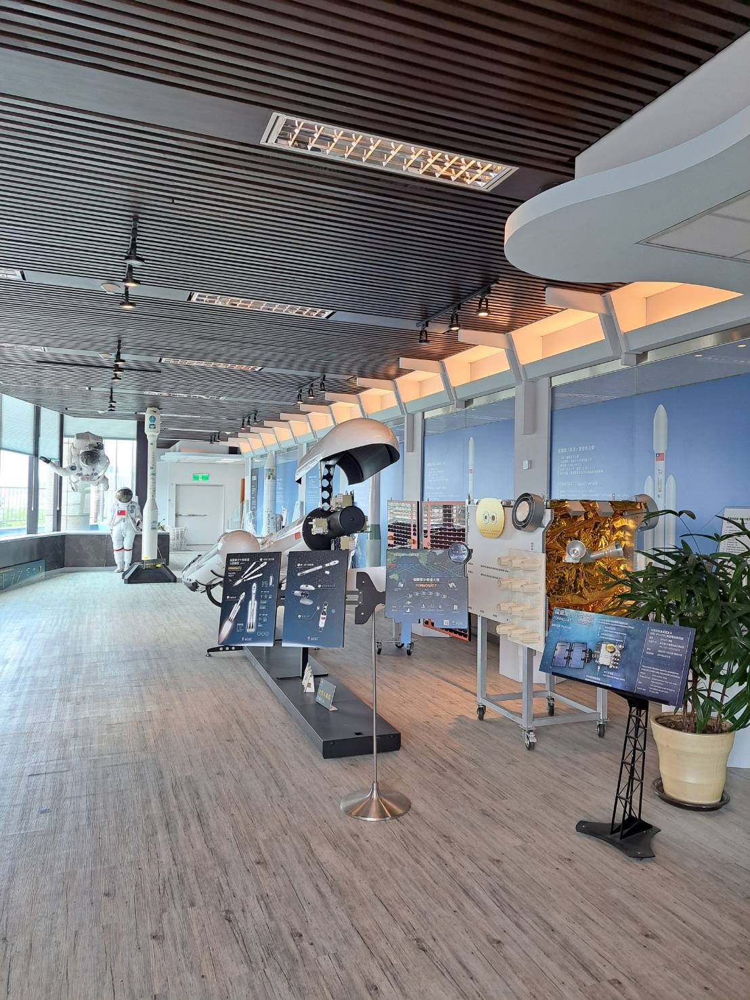
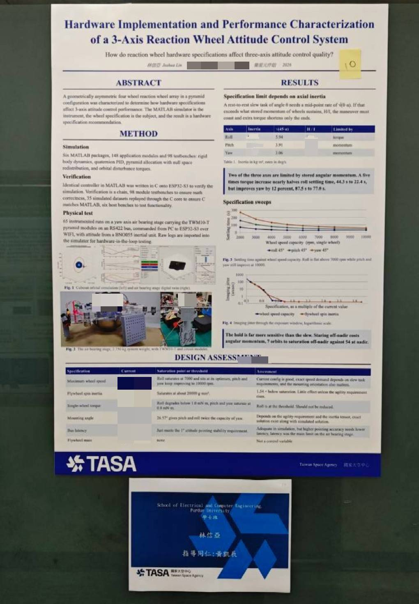

Satellite Electronics Intern, Taiwan Space Agency
Jul 2026 – Aug 2026
- Designed the bench test board for reaction wheel validation in KiCad and built it, integrating an ESP32-S3 microcontroller, a 9-axis IMU over I2C, an RS422 transceiver, and a DC-DC buck converter with hardware and software safety interlocks.
- Wrote real-time attitude control and telemetry firmware in C and C++, and cut combined communication and motor latency from 727 ms to 263 ms.
- Verified the RS422 serial protocol byte by byte against oscilloscope-captured traffic, diagnosing four firmware defects including memory corruption behind a reboot loop.
- Ran a six-stage gated bring-up and flew auto-generated control code on target through a real IMU and four reaction wheels across 65 runs on an air-bearing stage.
- Specific project details are covered by confidentiality.

